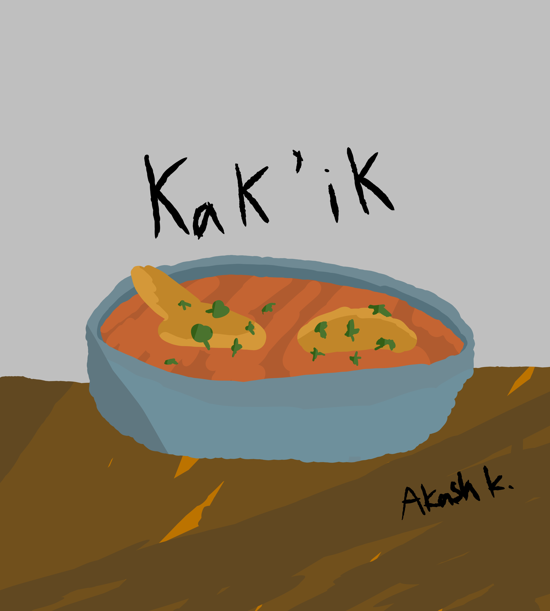
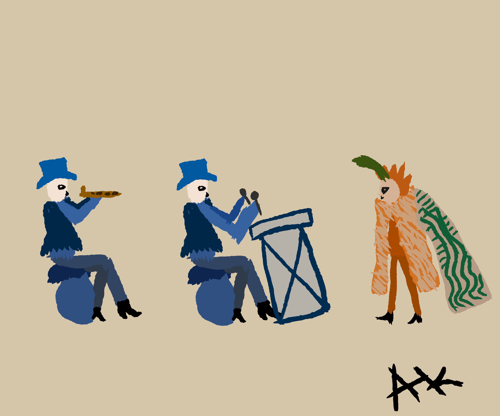

Kak’ik is a popular tomato stew served with turkey. It has its origins within the Q’eqchi Mayan community, dating back thousands of years in Guatemala. One can discern that cultural traditions passed down through food have been rooted in Guatemalan history for thousands of years.
Revolcado, another tomato stew, is prepared using tomatoes, onions, bell peppers, and intriguingly, the entrails of a pig head. This gruesome ingredient was directly taken from the Spanish, as the idea of using the entrails of a pig head was brought over from Spain and introduced to local communities.
Guatemalan food is also unique because it is influenced by its heritage from the original indigenous settlers and Spanish culture from the conquistadors that eventually took over. Dishes like Revolcado and Kak’ik are found nowhere else in the world and show how cultures can merge into new things.

Mayans painted many murals throughout Guatemala during their time, but only a few remain. These murals usually represented their daily life or the gods that they worshipped. Some of these murals, even of the few that remain today, depict the Spanish takeover of the Mayans in Guatemala.
One of these murals that have been recovered depicts Spanish Conquistadors beating drums to a dancer dressed in exotic feather garb. This mural, according to the Ixil Mayan community in present-day Guatemala, represents the attempt by Spanish conquistadors to convert the native Mayans to Christianity.

Redraw of a mural recently uncovered. Depicts two Europeans playing instruments in front of an exotically dressed Mayan.